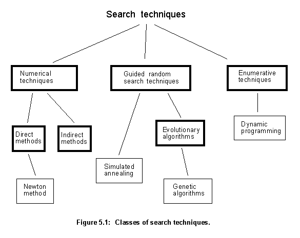
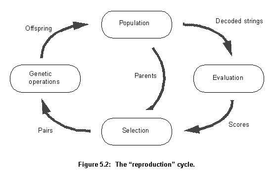
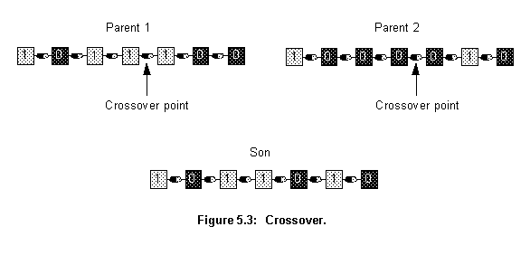
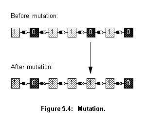

Chapter 5: Genetic Algorithm
5.1 Introduction
In nature, individuals best suited to competition for scanty resources survive. Evolving to keep adapted to a changing environment is essential for the members of any species. Although evolution manifests itself as changes in the species' features, it is in the species' genetical material that those changes are controlled and stored. Specifically evolution's driving force is the combination of natural selection and the change and recombination of genetic material that occurs during reproduction [17].
Evolution is an astonishing problem solving machine. It took a soup of primordial organic molecules, and produced from it a complex interrelating web of live beings with an enormous diversity of genetic information. Enough information to specify every characteristic of every species that now inhabits the planet. The force working for evolution is an algorithm, a set of instructions that is repeated to solve a problem. The algorithm behind evolution solves the problem of producing species able to thrive in a particular environment [63].
Genetic algorithms, first proposed by Holland in 1975 [64], are a class of computational models that mimic natural evolution to solve problems in a wide variety of domains [65]. Genetic algorithms are particularly suitable for solving complex optimization problems and for applications that require adaptive problem solving strategies.
5.2 Optimization techniques
Placement and routing are two search intensive tasks. Even though agent objects use knowledge to reduce search time, a great deal of searching is still necessary. A good proportion of this search time will be spent optimizing the components' placement in the layout. In searching for optimum solutions, optimization techniques are used and can be divided into three broad classes [65], as shown in figure 5.1.

- Numerical techniques use a set of necessary and sufficient conditions to be satisfied by the solutions of an optimization problem. They subdivide into direct and indirect methods. Indirect methods search for local extremes by solving the usually non-linear set of equations resulting from setting the gradient of the objective function to zero. The search for possible solutions (function peaks) starts by restricting itself to points with zero slope in all directions. Direct methods, such as those of Newton or Fibonacci, seek extremes by "hopping" around the search space and assessing the gradient of the new point, which guides the search. This is simply the notion of "hill climbing", which finds the best local point by climbing the steepest permissible gradient. These techniques can be used only on a restricted set of "well behaved" functions.
- Enumerative techniques search every point related to the function's domain space (finite or discretized), one point at a time. They are very simple to implement but usually require significant computation. These techniques are not suitable for applications with large domain spaces. Dynamic programming is a good example of this technique.
- Guided random search techniques are based on enumerative techniques but use additional information to guide the search. Two major subclasses are simulated annealing and evolutionary algorithms. Both can be seen as evolutionary processes, but simulated annealing uses a thermodynamic evolution process to search minimum energy states. Evolutionary algorithms use natural selection principles. This form of search evolves throughout generations, improving the features of potential solutions by means of biological inspired operations. Genetic Algorithms (GAs) are a good example of this technique.
Calculus based techniques are only suitable for a restricted set of well behaved systems. Placement optimization has a strong non-linear behaviour and is too complex for these methods. The set of possible layouts for a circuit can be enormous, which rules out the enumerative techniques.
These assumptions leave out only the guided random search techniques. Their use of additional information to guide the search reduces the search space to manageable sizes. There are two subclasses to this technique, simulated annealing and evolutionary algorithms. Both can be used to carry out placement, as shown in [66] and [8].
Agents could use many techniques for placement optimization. Currently it uses the EvalAgent class to implement a genetic algorithm. However, another classes could be created to implement other methods, such as Min-Cut, Force Directed or simulated annealing. They could be used in place of the EvalAgent class, without any other modification to other parts of the program. A future implementation using simulated annealing is very probable, but the genetic algorithm was chosen, as the first implementation, because of its novelty and because it has shown better results than simulated annealing [8].
5.3 The algorithm
A genetic algorithm emulates biological evolution to solve optimization problems. It is formed by a set of individual elements (the population) and a set of biological inspired operators that can change these individuals. According to evolutionary theory only the individuals that are the more suited in the population are likely to survive and to generate off-springs, thus transmitting their biological heredity to new generations.
In computing terms, genetic algorithms map strings of numbers to each potential solution. Each solution becomes an individual in the population, and each string becomes a representation of an individual. There should be a way to derive each individual from its string representation. The genetic algorithm then manipulates the most promising strings in its search for an improved solution. The algorithm operates through a simple cycle:
1. Creation of a population of strings.
2. Evaluation of each string.
3. Selection of the best strings.
4. Genetic manipulation to create a new population of strings.
Figure 5.2 shows how these four stages interconnect. Each cycle produces a new generation of possible solutions (individuals) for a given problem. At the first stage, a population of possible solutions is created as a start point. Each individual in this population is encoded into a string (the chromosome) to be manipulated by the genetic operators. In the next stage, the individuals are evaluated, first the individual is created from its string description (its chromosome) and its performance in relation to the target response is evaluated. This determines how fit this individual is in relation to the others in the population. Based on each individual's fitness, a selection mechanism chooses the best pairs for the genetic manipulation process. The selection policy is responsible to assure the survival of the fittest individuals.

The manipulation process applies the genetic operators to produce a new population of individuals, the offspring, by manipulating the genetic information possessed by the pairs chosen to reproduce. This information is stored in the strings (chromosomes) that describe the individuals. Two operators are used: Crossover and mutation. The offspring generated by this process take the place of the older population and the cycle is repeated until a desired level of fitness in attained or a determined number of cycles is reached.
5.3.1 Crossover
Crossover is one of the genetic operators used to recombine the population genetic material. It takes two chromosomes and swaps part of their genetic information to produce new chromosomes. This operation is similar to sexual reproduction in nature. As figure 5.3 shows, after the crossover point has been randomly chosen, portions of the parent's chromosome (strings) Parent 1 and Parent 2 are combined to produce the new offspring Son.

The selection process associated with the recombination made by crossover assures that special genetic structures, called building blocks, are retained for future generations. These building blocks represent the most fit genetic structures in the population.
5.3.2 Mutation
The recombination process alone cannot explore search space sections not represented in the population's genetic structures. This could make the search get stuck around local minima. Here mutation goes into action. The mutation operator introduces new genetic structures in the population by randomly changing some of its building blocks, helping the algorithm escape local minima traps. Since the modification is totally random and thus not related to any previous genetic structures present in the population, it creates different structures related to other sections of the search space.
As shown in figure 5.4, mutation is implemented by occasionally altering a random bit from a chromosome (string), the figure shows the operator being applied to the fifth element of the chromosome.

A number of other operators, other than crossover and mutation, have been introduced since the basic model was proposed. They are usually versions of the recombination and genetic alterations processes adapted to constraints of a particular problem. Examples of other operators are: inversion, dominance and genetic edge recombination.
5.3.3 Problem dependent parameters
This description of the genetic algorithms' computational model reviews the steps needed to create the algorithm. However, a real implementation takes account of a number of problem-dependent parameters. For instance, the offspring produced by the genetic manipulation (the next population to be evaluated) can either replace the whole population (generational approach) or just its less fitted members (steady-state approach). Problem constraints will dictate the best option.
Other parameters to be adjusted are the population size, crossover and mutation rates, evaluation method, and convergence criteria.
5.3.4 Encoding
Critical to the algorithm performance is the choice of underlying encoding for the solution of the optimization problem (the individuals on the population). Traditionally, binary encodings have being used because they are easy to implement. The crossover and mutation operators described earlier are specific to binary encodings. When symbols other than 1 or 0 are used, the crossover and mutation operators must be tailored accordingly.
A large number of optimization problems have continuous variables. A common technique for encoding them in the binary form uses a fixed-point integer encoding, each variable being coded using a fixed number of bits. The binary code of all the variables can then be concatenated in the strings of the population. A drawback of encoding variables as binary strings is the presence of Hamming cliffs: large Hamming distances between the codes of adjacent integers. For instance, 01111 and 10000 are integer representations of 15 and 16, respectively, and have a Hamming distance of 5. For the genetic algorithm to change the representation from 15 to 16, it must alter all bits simultaneously. Such Hamming cliffs present a problem for the algorithm, as both mutation and crossover can not overcome them easily.
It is desirable that the encoding makes the representation as robust as possible. This means that even if a piece of the representation is randomly changed, it will still represent a viable individual. For instance, suppose that a particular encoding scheme describes a circuit by the position of each of its components and a pointer to their individual descriptions. If this pointer is the description's memory address, it is very unlikely that, after a random change in its value, the pointer will still point to a valid description. But, if the pointer is a binary string of 4 bits pointing into an array of 16 positions holding the descriptions, regardless of the changes in the 4 bit string, the pointer will always point to a valid description. This makes the arrangement more tolerant to changes, more robust.
5.3.5 The evaluation step
The evaluation step in the cycle, shown in figure 5.2, is the one more closely related to the actual system the algorithm is trying to optmize. It takes the strings representing the individuals of the population and, from them, creates the actual individuals to be tested. The way the individuals are coded in the strings will depend on what parameters one is trying to optmize and the actual structure of possible solutions (individuals). However, the resulting strings should not be too big or the process will get very slow, but should be of the right size to represent well the characteristics to be optimized. After the actual individuals have been created they have to be tested and scored. These two tasks again are very related to the actual system being optimized. The testing depends on what characteristics should be optimized and the scoring, the production of a single value representing the fitness of an individual, depends on the relative importance of each different characteristic value obtained during testing.
5.3.6 Implementation
The Agents system uses the genetic algorithm for the placement optimization task, to improve components placement before routing. The Placer server exploits topological relationships between components of the design to create the groups of cells. However no grid or position coordinates are determined for them. These groups are placed and this placement optimized using the genetic algorithm (GA) encapsulated in the Eval agent object.
As the implementation of the Eval agent object is very dependent upon to the implementation of the other components of the Placer server, the actual implementation of this object and the genetic algorithm embedded in it will be left for the placement chapter.
- 5.1 - Introduction
-
- 5.2 - Optimization techniques
-
- 5.3 - The algorithm
-
- 5.3.1 - Crossover
-
- 5.3.2 - Mutation
-
- 5.3.3 - Problem dependent parameters
-
- 5.3.4 - Encoding
-
- 5.3.5 - The evaluation step
-
- 5.3.6 - Implementation
-
Next
Contents
Talk to me